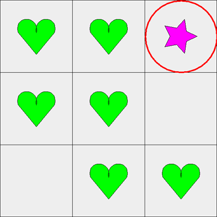

What is Track-It?
Track-It was created specifically to investigate mechanisms of sustained selective attention with young children.
Track-It presents the participant with a grid, with each of the grid locations optionally identified by a background image, and a target object moving on the grid along a random trajectory. Participants are asked to visually track the target and identify the grid location last visited by the target before it disappears. The moving target in this task can be accompanied by distracters, also moving along a random trajectory. Target and distracter objects are optionally randomly selected on each trial from a pool of 72 unique objects. After each trial, all possible distracter and target objects are (optionally) displayed, and the participant is asked to identify which one he or she tracked.

Immediately before a trial begins, six distractors, 3x3 grid.
Features
Free and Open Source
Create your own experiments by editing the source code, check the base Track-It code for bugs, redistribute it to your friends!
Adjustable Complexity
Different age groups can handle different complexity—adjust the grid sizes, number, type, and speed of distractors, and more!
Full Data Recording
Everything that you (and your participant) see on the screen is recorded in an easy-to-read and easy-to-parse file.
Customizable Experiments
You control the trial length, number of trials, which screens are presented to the user, and which (if any) background images are shown.
User-Defined Framerate
Working on a weird machine with a strange monitor? Working with Tobii? Adjust the framerate to match.
Active Development
We're currently working on integrating directly with Tobii. If you have other ideas, let us know!
Publications
Journal Papers
- Fisher, A.V., Thiessen, E. D., Godwin, K.E., Kloos, H., & Dickerson, J.P. (in press). Assessing selective sustained attention in 3- to 5-year-old children: Evidence from a new paradigm. Journal of Experimental Child Psychology.
We will post papers online as soon as they become available. For advance copies, please contact Dr. Anna Fisher.
But how do I use it ...?
Download Track-It
- Download a copy of the Track-It software (see below).
- Mac/Windows: click the download file to open Track-It.
- Linux: run the command java -jar TrackIt.jar
Create an Experiment
- You'll see a start-up screen with many options.
- Fill in the User Data section for your records only—this won't affect the actual experiment.
- Use the Trial Data section to specify experimental details (number and type distractors, speeds, trial length, etc).
- If you're using Tobii, you may wish to set the Track-It framerate to 60 or 120, depending on your hardware.
- Don't worry, we save all of this information to a file for you!
- When you're done, click Begin. You'll see a pop-up window asking you where to save all the data generated by the experiments.
- The experiment begins!
Run the Experiment
- Spacebar and clicking move you forward. Escape exits the program at any time.
- You'll see a grid with some shapes on it. Press spacebar to make them move.
- The shapes disappear eventually; the participant tells you in which grid box the target stopped. Click to record it.
- A smiley face appears. Click.
- If you selected the Memory Check, the participant will pick out what he or she thinks is the target. Click on it.
- Another smiley face. Click.
- And it's on to the next trial!
Analyze the Data
- Track-It maintains enough information to completely reconstruct any experiment.
- The data is stored as a structured .csv file, which can be loaded and analyzed in, for example, Excel.
... and where can I get it?
Newest Version
This version of Track-It is actively developed and should run on any system—Mac, Windows, Linux, etc—that has Java installed.
Download this if you want the newest, most feature-filled Track-It. Users starting their own research paths or replicating newer results will want to use this version.
Legacy Versions
This version of Track-It is not actively developed and works natively only on Windows machines.
Download this if you wish to replicate past results. This version lacks several features found in the newer Track-Its and comes as-is with no plans for modifications and no support.
Questions?
Is it related to psychology?
Please contact Dr. Anna Fisher, Associate Professor in Developmental Psychology at Carnegie Mellon and the project lead for Track-It.
Is it related to computers?
You'll have better luck contacting John Dickerson, lead developer on the project. He's a full-time Ph.D. student in computer science at CMU's AMEM and apologizes for any slow response times!
{kind=link}